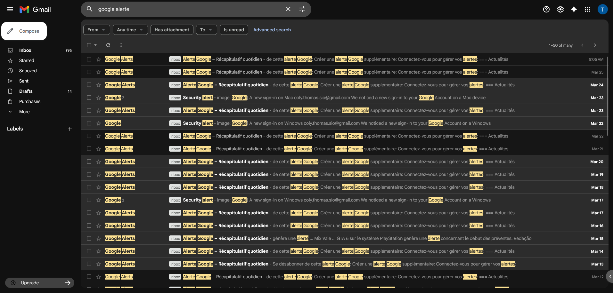

Qu'est-ce que la veille informationnelle ?
La veille informationnelle (ou veille technologique) est un processus continu de surveillance et de collecte d'informations sur les évolutions technologiques, les nouvelles menaces de sécurité, et les tendances du secteur IT. Elle permet de rester à jour dans un domaine en constante évolution.
Dans le cadre du BTS SIO, la veille est une compétence essentielle qui démontre notre capacité à nous tenir informés et à anticiper les changements technologiques.
Qu'est-ce que le Green IT ?
Le Green IT (ou numérique responsable) désigne l'ensemble des technologies de l'information et de la communication dont l'empreinte économique, sociale et environnementale a été réduite au minimum. Il s'agit d'optimiser l'outil informatique pour qu'il soit plus écologique tout au long de son cycle de vie.
// Veille Technologique : Green IT

Preuve Mail [SISR]Numérique Responsable & Green IT
Éco-conception
Réduire l'impact environnemental dès la conception des produits et allonger leur durée de vie via le reconditionnement.
Sobriété Numérique
Développer des services moins gourmands en données et en énergie pour limiter la sollicitation des serveurs.
Infrastructures
Optimiser le PUE* des Data Centers et utiliser des sources d'énergie décarbonées pour le stockage. ***est la norme internationale de référence pour mesurer l'efficacité énergétique des data centers
// Synthèse
Ce que j'ai appris de ma veille
Ma veille technologique sur le Green IT m'a permis de comprendre que le numérique responsable est devenu un pilier stratégique pour les entreprises modernes :
- L'allongement du cycle de vie — La priorité n'est plus au remplacement systématique, mais au reconditionnement et à la réparabilité du matériel (Loi AGEC).
- L'éco-conception logicielle — Le développement doit viser la sobriété : un code plus léger consomme moins de ressources CPU et prolonge la batterie des terminaux.
- L'optimisation des infrastructures — Le choix des Data Centers se base désormais sur le PUE (Power Usage Effectiveness) pour garantir une efficacité énergétique maximale.
- L'impact environnemental global — J'ai pris conscience que le numérique représente environ 4% des émissions mondiales de gaz à effet de serre, un chiffre en constante augmentation.